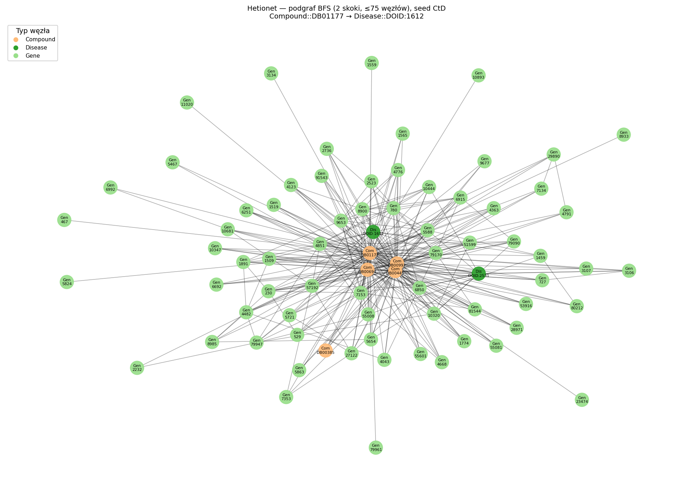

Temat: Interpretowalność relacyjnych sieci grafowych (RGCN) w zadaniu Drug Repurposing na grafie wiedzy Hetionet.
Autorzy: Jakub Jażdżyk, Kajetan Rożej
Data: 12.04.2026
Współczesna medycyna stoi przed wyzwaniem ogromnej ilości danych, których powiązania wykraczają poza możliwości percepcyjne człowieka. Jednym z najbardziej obiecujących kierunków jest Drug Repurposing - poszukiwanie nowych zastosowań dla leków już dopuszczonych do obrotu. Projekt ten ma na celu budowę systemu, który nie tylko wskaże potencjalne nowe terapie, ale przede wszystkim „tłumacząc się” ze swojej decyzji, wskaże biologiczne ścieżki, które do niej doprowadziły.
Głównym problemem badawczym jest tzw. „Black-Box effect” w modelach Deep Learning. W medycynie sama predykcja („ten lek leczy tę chorobę”) jest niewystarczająca - lekarz i badacz potrzebują uzasadnienia w postaci konkretnych interakcji genetycznych i białkowych.
Celem projektu jest implementacja relacyjnej sieci grafowej (RGCN), która nauczy się semantyki grafu wiedzy Hetionet, a następnie zostanie poddana procesowi interpretacji przy użyciu metod XAI (Explainable AI).
Hipotezy:
H1 (Relacyjność): Architektura RGCN, dzięki zastosowaniu osobnych macierzy wag dla każdego typu relacji, jest w stanie odróżnić krawędzie o znaczeniu pozytywnym (terapeutycznym) od negatywnych (skutki uboczne).
H2 (Redukcja Szumu): Metoda GNNExplainer pozwoli na wyekstrahowanie z gęstego grafu (tzw. hairball) ścieżek o długości 2-3 skoków, które są zrozumiałe dla eksperta i biologicznie poprawne.
Projekt bazuje na Hetionet – wielowarstwowym grafie wiedzy integrującym dane z dziesiątek baz biomedycznych.
Węzły (47 031): Podzielone na 11 typów (Leki, Choroby, Geny, Ścieżki sygnałowe, Anatomia).
Krawędzie (2 250 197): Podzielone na 24 typy relacji (meta-edges).
Kluczowa relacja (Target): CtD (Compound–treats–Disease). Tę relację model będzie musiał zgadywać, analizując pozostałe 23 typy połączeń.
Poniżej: przykładowy podgraf (BFS, 2 skoki, limit węzłów) wokół losowej krawędzi CtD - wygenerowany skryptem scripts/visualize_hetionet_subgraph.py z przetworzonych danych. Kolory = typ węzła (Compound, Disease, Gene itd.); pełny graf jest zbyt gęsty, żeby pokazać go na jednym slajdzie.

Model zostanie wytrenowany w paradygmacie uzupełniania brakujących ogniw. Proces ten przebiega w trzech krokach:
Maskowanie: Część istniejących relacji “lek-leczy-chorobę” zostaje ukryta przed modelem.
Uczenie: Model analizuje pozostałe 2 miliony krawędzi (np. jak dany lek wpływa na geny, a jak te geny korelują z chorobą), budując wewnętrzną reprezentację wiedzy.
Weryfikacja: Model musi ocenić prawdopodobieństwo istnienia krawędzi, których nie widział. Wysoki wynik dla par nieistniejących w bazie danych będzie traktowany jako potencjalne odkrycie nowego zastosowania leku.
Sercem modelu jest sieć RGCN. Jej działanie opiera się na mechanizmie Message Passing:
Węzły wymieniają się informacjami (embeddingami) ze swoimi sąsiadami.
W odróżnieniu od standardowych sieci grafowych, w RGCN każda wiadomość przechodzi przez filtr (macierz wag) przypisany do konkretnego typu relacji.
Dzięki temu model „rozumie”, że informacja płynąca od genu jest inna niż informacja płynąca od objawu chorobowego.
Jako dekoder zostanie wykorzystana funkcja punktacji DistMult, która oblicza iloczyn skalarny między embeddingami leku i choroby, uwzględniając relację terapeutyczną. Pozwala to na uzyskanie końcowego prawdopodobieństwa sukcesu leczenia.
Kluczowym elementem projektu jest moduł wyjaśniający oparty na GNNExplainer. Proces generowania wyjaśnienia dla wybranej predykcji będzie przebiegał następująco:
Optymalizacja maski: GNNExplainer przeprowadza serię symulacji, nakładając maski na krawędzie w otoczeniu wybranego leku.
Analiza istotności: Algorytm identyfikuje, które krawędzie są kluczowe dla końcowego wyniku. Jeśli usunięcie połączenia z „Genem X” powoduje drastyczny spadek pewności modelu, krawędź ta jest uznawana za ważną.
Wizualizacja ścieżki dowodowej: Wynikiem działania modułu będzie czytelny podgraf, pokazujący np. łańcuch: Lek A -> Wiąże Gen B -> Współwystępuje z Chorobą C.
Skuteczność systemu zostanie oceniona na dwóch poziomach:
Poziom AI (Predykcja): Wykorzystanie metryk AUC-ROC oraz MRR (Mean Reciprocal Rank), aby sprawdzić, jak dobrze model odnajduje ukryte połączenia medyczne.
Poziom XAI (Wyjaśnienie):
Fidelity (Wierność): Czy wyjaśnienie faktycznie odzwierciedla logikę modelu?
Sparsity (Zwięzłość): Czy wyjaśnienie jest na tyle krótkie, by człowiek mógł je przeanalizować?
Analiza Jakościowa: Weryfikacja wybranych przypadków z literaturą medyczną.
Faza 1 (Zakończona): Przygotowanie środowiska i preprocessing danych Hetionet do formatu PyTorch Geometric.
Faza 2 (W toku): Implementacja i trening modelu RGCN przy użyciu techniki Neighbor Sampling (obsługa dużego grafu).
Faza 3 (Planowana): Integracja z GNNExplainer i budowa modułu wizualizacji grafów wyjaśniających.
Faza 4 (Planowana): Eksperymenty badawcze, zebranie metryk i przygotowanie raportu końcowego.
Złożoność obliczeniowa: Pełny graf Hetionet jest duży, co może wymagać optymalizacji zużycia pamięci VRAM.
Niestabilność wyjaśnień: Metody oparte na maskowaniu mogą być wrażliwe na hiperparametry, co będzie wymagało starannego dostrojenia modułu XAI.
Schlichtkrull, M., Kipf, T. N., Bloem, P., Van Den Berg, R., Titov, I., Welling, M. (2018). Modeling Relational Data with Graph Convolutional Networks. ESWC.
Ying, R., Bourgeois, D., You, J., Zitnik, M., Leskovec, J. (2019). GNNExplainer: Generating Explanations for Graph Neural Networks. NeurIPS.
Wójcik, F. Grafowe sieci neuronowe (książka).